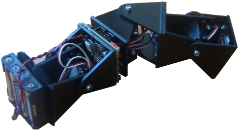

El robot Minicube-II ya se mueve de manera autónoma. Está formado por la unión de 3 módulos Y1 (es una configuración mínima), con conexión de cabeceo-viraje-cabeceo.
Como electrónica utiliza el segundo prototipo de la tarjeta Skycube. Está situada entre dos módulos y se alimenta mediante 4 pilas AAA. La locomoción se realiza mediante los micro-osciladores. El código fuente está disponible en el respositorio de la Skycube. Aquí puedes ver el código del programa principal: ej-PYP1.c. El robot realiza 5 movimientos diferentes. Se cambia de uno a otro con el pulsador de pruebas de la Skycube. Los parámetros de los osciladores están fijados en el código.

Este robot es una prueba de concepto del que utilizaremos en el I taller de robots modulares 🙂
Juan, lo has conseguido!. Enhorabuena. Me encanta!
Antes no le veía especial interés a la robótica modular, pero esa movilidad tan versatil me ha encantado. Solo hecho en falta algo de reactividad al entorno, pero eso llegará imagino.
Enhorabuena, sigue así
que buena pinta tiene eso sin la dependencia del cable !!
¿quién había dicho que la escala mini no era interesante el prototipado experimental… qué digo de 'prototipado' si ya casi parece producto final. Que así tal cual ya se podría usar para varias aplicaciones que se me están ocurriendo 🙂
Alejandro: Muchas gracias 🙂 Te va a gustar mucho más con el siguiente cambio
Garred: Muchas gracias :-). Ahora que ya está solucionada la locomoción y que el robot es autónomo, es la hora de empezar con la reactividad. Ahora es cuando empiezan las cosas interesantes 😉
Chris: Muchas gracias :-). Ya casi casi es un producto final. Estamos esperando a recibir el PCB industrial y estamos trabajando en algunas sorpresitas más
Juan! Me encanta! Al fin Cube es autonomo 🙂
Muchisimas felicidades por este gran progreso, y espero poder conocerle en persona estas navidades 🙂
Gracias Ángel! Ahora Tupperbot podrá transportar “larvas” dentro y depositarlas en diferentes sitios 🙂
exelente tu trabajo…
Espero me puedas compatir como se construye estoy muy interezado para enseñar a alumnos de escasos recursos.
Hola Alejandro,
Gracias 🙂 Me alegro de que te guste.
Se trata de un robot libre: toda la electrónica, mecánica y el software son libres y están publicados. Envíame un correo privado si quieres saber algo en concreto